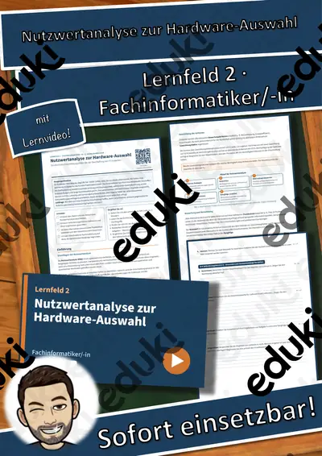

Sicher Lesen Sicher auf dem Weg – Verkehrsregeln und Verkehrszeichen verstehen – Sicherheitsthemen einfach lesen und ver

Rechenheft Zahlenraum 20: Übungsheft mit Selbstkontrolle

LF 2 Elektroniker/-in: Leitungsdimensionierung: Strombelastbarkeit und Spannungsfall – Übungen, Lösungen + Lernvideo

Klammerkarten: Am Meer – Klammerkarten – Klasse 1–4

Fächer-Steckbriefe A–Z Klasse 1–10: Baukasten für Lehrkräfte – kostenlos

Übertritt nach Klasse 4: Baukasten für Lehrkräfte – kostenlos

Fächerwahl und Infoabende an allen Schularten: Baukasten für Lehrkräfte – kostenlos

Winter Escape Room, English Year 6 (KS2): 6 Stations, 2 Locks, 1 Magic Word (FREE)

Escape-Room Winter – Deutsch Klasse 5 für die Mittelschule: 6 Stationen, 2 Schlösser, 1 Zauberwort (GRATIS)

Lernentwicklungsgespräche Klasse 1–10: Baukasten für Lehrkräfte – kostenlos

Der erste Schultag in Klasse 1: Baukasten für Lehrkräfte – kostenlos

Elternabend Klasse 1–10: Baukasten für Lehrkräfte – kostenlos

Klammerkarten: Dinosaurier – Klammerkarten – Klasse 1–4

Sprechanlaesse_Herbst_Fragekarten

Ich habe, wer hat? Obst und Gemüse – Lese-Schleifen – Klasse 1–4

Himmel und Hölle: Dinosaurier – Himmel und Hölle – Klasse 1–4

Wort-Bild-Karten: Bauernhof – Wort-Bild-Karten – Klasse 1–4

LF 6 Kaufleute im Einzelhandel: Bezugskalkulation: Den Einstandspreis berechnen – Übungen, Lösungen + Lernvideo

Sprechanlässe: Sport – Sprechanlässe – Klasse 1–4

Memory: Schule und Klassenzimmer – Bild-Wort-Spiele – Klasse 1–4

LF 3 Kaufleute im Einzelhandel: Kaufvertrag und Geschäftsfähigkeit an der Kasse – Übungen, Lösungen + Lernvideo

Wortspiele: Sag es nicht! Sommer – Klasse 2–4

Himmel und Hölle: Bauernhof – Himmel und Hölle – Klasse 1–4

LF 2 Fachinformatiker/-in: Nutzwertanalyse zur Hardware-Auswahl – Übungen, Lösungen + Lernvideo

Lesen, Malen und Kleben: Weltall – Lesen und Malen – Klasse 1–4

LF 12 Zahnmedizinische Fachangestellte: Röntgen: Strahlenschutz und Aufnahmetechnik – Übungen, Lösungen + Lernvideo

Wortgitter-Suchsel: Berufe – Wortgitter – Klasse 1–4

LF 3 Zahnmedizinische Fachangestellte: Infektionsschutz und Abfallmanagement in der Zahnarztpraxis – Übungen, Lösungen +

Lesen, Malen und Kleben: Ritter und Burg – Lesen und Malen – Klasse 1–4

Sprechanlässe: Bauernhof – Sprechanlässe – Klasse 1–4

Domino: Schule und Klassenzimmer – Bild-Wort-Spiele – Klasse 1–4

LF 12 Medizinische Fachangestellte: Arbeitszeugnis lesen und verstehen – Übungen, Lösungen + Lernvideo

Ich habe, wer hat? Im Garten – Lese-Schleifen – Klasse 1–4

Wortspiele: Sag es nicht! Im Restaurant – Klasse 2–4

Wortgitter-Suchsel: Zirkus – Wortgitter – Klasse 1–4

Himmel und Hölle: Schule und Klassenzimmer – Himmel und Hölle – Klasse 1–4

Wort-Bild-Karten: Im Garten – Wort-Bild-Karten – Klasse 1–4

Lesen, Malen und Kleben: Piraten – Lesen und Malen – Klasse 1–4
LF 1 Kfz-Mechatroniker/-in: Betriebs- und Hilfsstoffe sowie Entsorgung – Übungen, Lösungen + Lernvideo

Memory: Herbst – Bild-Wort-Spiele – Klasse 1–4

Ich habe, wer hat? Berufe – Lese-Schleifen – Klasse 1–4

Wortspiele: Sag es nicht! Kochen und Backen – Klasse 2–4

Klammerkarten: Bauernhof – Klammerkarten – Klasse 1–4

Wort-Bild-Karten: Haustiere – Wort-Bild-Karten – Klasse 1–4

Lesen, Malen und Kleben: Am Meer – Lesen und Malen – Klasse 1–4

Sprechanlässe: Haustiere – Sprechanlässe – Klasse 1–4

Domino: Herbst – Bild-Wort-Spiele – Klasse 1–4

Ich habe, wer hat? Haustiere – Lese-Schleifen – Klasse 1–4
Keine Materialien gefunden – versuch einen anderen Suchbegriff oder Filter.